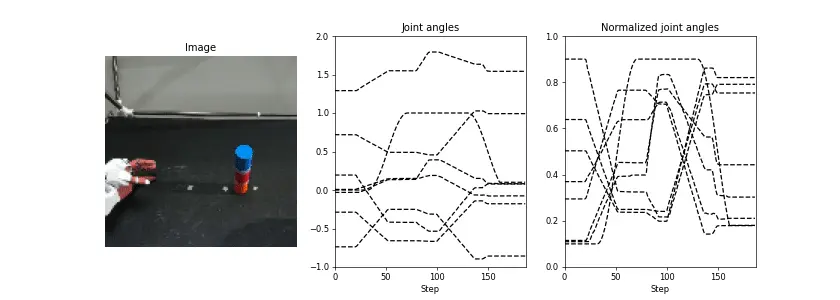

データセット作成
ダウンロード
AIRECを用いて物体把持動作を教示した際のセンサ情報から、機械学習のためのデータセットを作成する。
ここでは、収集済みのサンプルデータとスクリプトを用いて、複数のrosbagデータから特定のファイルのみを取り出しnpz形式で保存する方法について述べる。
以下のコマンドに従って、ファイルのダウンロードと解凍を行う。
$ mkdir ~/tmp
$ cd tmp
$ wget https://dl.dropboxusercontent.com/s/90wkfttf9w0bz0t/rosbag.tar
$ tar xvf rosbag.tar
$ cd rosbag
$ ls
1_rosbag2npz.py 2_make_dataset.py 3_check_data.py bag data output utils.py
フォルダ構成
ダウンロードファイルの中身は、以下のようなフォルダで構成されている。
プログラム番号1から順にプログラムを実行するだけで、rosbagデータから学習データを生成することが可能である。
- 1_rosbag2npy.py：rosbagデータから指定した情報（トピックデータ）のみを抽出し、npz形式に変換する。
- 2_make_dataset.py：本プログラムでは3つの処理を行う。1つ目はデータ長の整形であり、
rosbag record 時に --duration 引数を設定しても、プログラム実行タイミングによってデータの時系列長が異なるため、全データの時系列長を揃える。2つ目は、指定したインデックスに基づいて学習・テストデータを仕分けし、保存する。3つ目は、関節角度の正規化パラメータ（上下限）の計算を行う。本処理の詳細は :doc:こちら </dataset/tips> を参照ください。
- 3_check_data.py：収集データを可視化プログラムであり、本プログラムはロボットの画像と関節角度をgifとして保存する。学習プログラムを実行する前に、必ず画像のトリミング範囲や関節角度の正規化範囲を確認する。
- utils.py：データセット作成に必要な前処理プログラム（正規化など）が保存されている。
- bag：収集した
rosbag データが保存されている。
- data：
2_make_dataset.py 実行後に、学習・テストデータ、そして関節角度の正規化パラメータが保存される。
- output：可視化結果が保存される。ファイル名の末尾の数字は学習データのインデックスを示している。
データ抽出
次のコマンドを実行することで、rosbagデータから指定した情報（トピックデータ）のみを抽出することが可能である。
引数の詳細は以下の通りである。
- bag_dir ： rosbagデータが保存されたディレクトリを指定する。
- freq ： センサによって保存時のサンプリングレート（Hz）が異なるため、指定したサンプリングレートでデータを抽出、保存する。
$ python3 1_rosbag2npz.py ./bag/ --freq 10
Failed to load Python extension for LZ4 support. LZ4 compression will not be available.
./bag/rollout_001.bag
1664630681.9616075
1664630682.0616074
1664630682.1616075
1664630682.2616074
全てのトピックをnpzファイルに保存すると膨大なメモリを消費するため、本スクリプトでは一例として、ロボットセンサ情報（カメラ画像、関節角度、グリッパ状態）を保存する。
31行目で保存したいトピック名を列挙し、47-84行目では各トピックのメッセージからデータを抽出し予め用意したリストに保存する。
なお、カメラ画像をそのまま保存すると膨大な容量が必要になるため、事前にリサイズもしくはトリミングすることを推奨する。
また、一定間隔でサンプリングしても、rosbag record の開始・終了タイミングによってトピックのデータ長が異なる場合があるため、91行目以降では時系列長の調整を行っている。
なお本プログラムのトピック名やデータの抽出方法を変更することで、ユーザ自身のロボットへ適用することが可能である。
| [SOURCE] 1_rosbag2npz.py |
|---|
| import os
import cv2
import glob
import rospy
import rosbag
import argparse
import numpy as np
parser = argparse.ArgumentParser()
parser.add_argument('bag_dir', type=str)
parser.add_argument('--freq', type=float, default=10)
args = parser.parse_args()
files = glob.glob( os.path.join( args.bag_dir, '*.bag') )
files.sort()
for file in files:
print(file)
savename = file.split('.bag')[0] + '.npz'
# Open the rosbag file
bag = rosbag.Bag(file)
# Get the start and end times of the rosbag file
start_time = bag.get_start_time()
end_time = bag.get_end_time()
# Get the topics in the rosbag file
#topics = bag.get_type_and_topic_info()[1].keys()
topics = ['/torobo/joint_states', '/torobo/head/see3cam_left/camera/color/image_repub/compressed',
'/torobo/left_hand_controller/state']
# Create a rospy.Time object to represent the current time
current_time = rospy.Time.from_sec(start_time)
joint_list = []
finger_list = []
image_list = []
finger_state_list = []
prev_finger = None
finger_state = 0
# Loop through the rosbag file at regular intervals (args.freq)
freq = 1. / float(args.freq)
while current_time.to_sec() < end_time:
print(current_time.to_sec())
# Get the messages for each topic at the current time
for topic in topics:
for topic_msg, msg, time in bag.read_messages(topic):
if time >= current_time:
if topic == '/torobo/joint_states':
joint_list.append( msg.position[7:14] )
if topic == '/torobo/head/see3cam_left/camera/color/image_repub/compressed':
np_arr = np.frombuffer(msg.data, np.uint8)
np_img = cv2.imdecode(np_arr, cv2.IMREAD_COLOR)
np_img = np_img[::2,::2]
image_list.append( np_img[150:470,110:430].astype(np.uint8) )
if topic == '/torobo/left_hand_controller/state':
finger = np.array(msg.desired.positions[3])
if prev_finger is None:
prev_finger = finger
if finger - prev_finger > 0.005 and finger_state == 0:
finger_state = 1
elif prev_finger - finger > 0.005 and finger_state == 1:
finger_state = 0
prev_finger = finger
finger_list.append(finger)
finger_state_list.append(finger_state)
break
# Wait for the next interval
current_time += rospy.Duration.from_sec(freq)
rospy.sleep(freq)
# Close the rosbag file
bag.close()
# Convert list to array
joints = np.array(joint_list, dtype=np.float32)
finger = np.array(finger_list, dtype=np.float32)
finger_state = np.array(finger_state_list, dtype=np.float32)
images = np.array(image_list, dtype=np.uint8)
# Get shorter lenght
shorter_length = min(len(joints), len(images), len(finger), len(finger_state))
# Trim
joints = joints[:shorter_length]
finger = finger[:shorter_length]
images = images[:shorter_length]
finger_state = finger_state[:shorter_length]
# Save
np.savez(savename,
joints=joints,
finger=finger,
finger_state=finger_state,
images=images)
|
学習/テストデータ作成
次のコマンドを実行することで、
前節で変換されたnpzファイルから学習・テストデータを生成する。
$ python3 2_make_dataset.py
./bag/rollout_001.npz
./bag/rollout_002.npz
./bag/rollout_003.npz
./bag/rollout_004.npz
./bag/rollout_005.npz
本プログラムは次の3ステップから構成され、生成された各データは data フォルダ内に保存される。
はじめに、 load_data 関数を用いて全データの読み込みを行う。
この時、21,22,28,29行目では以下の処理が行われる。
- resize_img : 指定した画像サイズに変更する。
cv2.resize 関数をベースに、時系列画像に対応している。
- cos_interpolation : ロボットハンドの開閉コマンドのように、急激に変化する0/1のバイナリデータの学習と予測を容易にするために、cos波を用いて滑らかな開閉コマンドに整形する。詳細は こちら。
- list_to_numpy :
rosbag record 時に保存時間 --duration を指定しても、ROSシステムの実行タイミングの関係上、必ず全てのrosbagデータのシーケンス長が同じになるとは限らない。そこで、最も長いシーケンスに合わせてpadding処理を行うことで、データ長の統一・整形を行う。
次に45-48行目では、ユーザが指定するインデックス（38,39行目）に基づいて学習・テストデータの仕分けを行う。
教示位置とインデックスの関係は以下の表に示す通りである。
表の位置A-Eは物体位置に対応しており、学習データは各教示位置でそれぞれ4つ、テストデータは全位置でそれぞれ1つ収集した。
すなわち、合計で15データを収集した。
教示位置で収集したテストデータのみを用いてモデルを評価した場合、教示位置に過学習してしまい、未学習位置における汎化動作を獲得しにくい。
そのため、多様な位置における汎化性能を獲得するために、少量でも未学習位置をテストデータに含めることが重要である。
最後に51-52行目で、関節角度の正規化パラメータとして各関節角度の上下限を計算し、保存する。
関節角度の上下限を計算する理由については、こちらを参照ください。
| Position |
A |
B |
C |
D |
E |
| train |
0,1,2,3 |
None |
5,6,7,8 |
None |
10,11,12,13 |
| test |
4 |
15 |
9 |
16 |
14 |
| [SOURCE] 2_make_dataset.py |
|---|
| import os
import cv2
import glob
import argparse
import numpy as np
import matplotlib.pylab as plt
from eipl.utils import resize_img, calc_minmax, list_to_numpy, cos_interpolation
def load_data(dir):
joints = []
images = []
seq_length = []
files = glob.glob(os.path.join(dir, "*.npz"))
files.sort()
for filename in files:
print(filename)
npz_data = np.load(filename)
images.append(resize_img(npz_data["images"], (128, 128)))
finger_state = cos_interpolation(npz_data["finger_state"])
_joints = np.concatenate((npz_data["joints"], finger_state), axis=-1)
joints.append(_joints)
seq_length.append(len(_joints))
max_seq = max(seq_length)
images = list_to_numpy(images, max_seq)
joints = list_to_numpy(joints, max_seq)
return images, joints
if __name__ == "__main__":
# dataset index
train_list = [0, 1, 2, 3, 5, 6, 7, 8, 10, 11, 12, 13]
test_list = [4, 9, 14, 15, 16]
# load data
images, joints = load_data("./bag/")
# save images and joints
np.save("./data/train/images.npy", images[train_list].astype(np.uint8))
np.save("./data/train/joints.npy", joints[train_list].astype(np.float32))
np.save("./data/test/images.npy", images[test_list].astype(np.uint8))
np.save("./data/test/joints.npy", joints[test_list].astype(np.float32))
# save joint bounds
joint_bounds = calc_minmax(joints)
np.save("./data/joint_bounds.npy", joint_bounds)
|
データ可視化
次のコマンドを実行することで、 ロボットの画像と関節角度がgifアニメーションとして保存される。
引数 idx は可視化したいデータのインデックスである。
実行結果より、関節角度の範囲が [-0.92, 1.85] から [0.1, 0.9] になっており、ユーザが指定した正規化範囲内に収まっていることがわかる。
また下図は、実際に生成されたgifアニメーションを示しており、左からカメラ画像、ロボット関節角度、正規化後のロボット関節角度である。
仮に画像のトリミングや関節角度の正規化範囲が期待と異なる場合、前節の resize_img、 calc_minmax 処理で誤りが発生している可能性が高い。
$ python3 3_check_data.py --idx 4
load test data, index number is 4
Joint: shape=(5, 187, 8), min=-0.92, max=1.85
Norm joint: shape=(5, 187, 8), min=0.1, max=0.9

| [SOURCE] 3_check_data.py |
|---|
| import argparse
import numpy as np
import matplotlib.pylab as plt
import matplotlib.animation as anim
from eipl.utils import normalization
parser = argparse.ArgumentParser()
parser.add_argument("--idx", type=int, default=0)
args = parser.parse_args()
idx = int(args.idx)
joints = np.load("./data/test/joints.npy")
joint_bounds = np.load("./data/joint_bounds.npy")
images = np.load("./data/test/images.npy")
N = images.shape[1]
# normalized joints
minmax = [0.1, 0.9]
norm_joints = normalization(joints, joint_bounds, minmax)
# print data information
print("load test data, index number is {}".format(idx))
print("Joint: shape={}, min={:.3g}, max={:.3g}".format(joints.shape, joints.min(), joints.max()))
print(
"Norm joint: shape={}, min={:.3g}, max={:.3g}".format(
norm_joints.shape, norm_joints.min(), norm_joints.max()
)
)
# plot images and normalized joints
fig, ax = plt.subplots(1, 3, figsize=(14, 5), dpi=60)
def anim_update(i):
for j in range(3):
ax[j].cla()
# plot image
ax[0].imshow(images[idx, i, :, :, ::-1])
ax[0].axis("off")
ax[0].set_title("Image")
# plot joint angle
ax[1].set_ylim(-1.0, 2.0)
ax[1].set_xlim(0, N)
ax[1].plot(joints[idx], linestyle="dashed", c="k")
for joint_idx in range(8):
ax[1].plot(np.arange(i + 1), joints[idx, : i + 1, joint_idx])
ax[1].set_xlabel("Step")
ax[1].set_title("Joint angles")
# plot normalized joint angle
ax[2].set_ylim(0.0, 1.0)
ax[2].set_xlim(0, N)
ax[2].plot(norm_joints[idx], linestyle="dashed", c="k")
for joint_idx in range(8):
ax[2].plot(np.arange(i + 1), norm_joints[idx, : i + 1, joint_idx])
ax[2].set_xlabel("Step")
ax[2].set_title("Normalized joint angles")
ani = anim.FuncAnimation(fig, anim_update, interval=int(N / 10), frames=N)
ani.save("./output/check_data_{}.gif".format(idx))
|